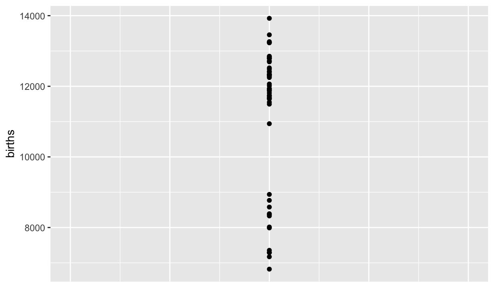
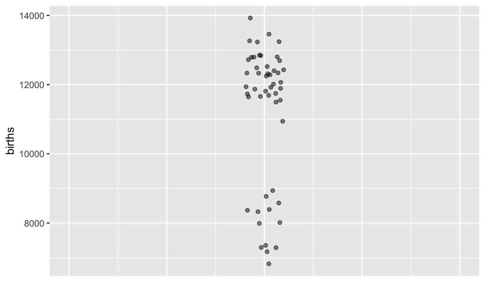
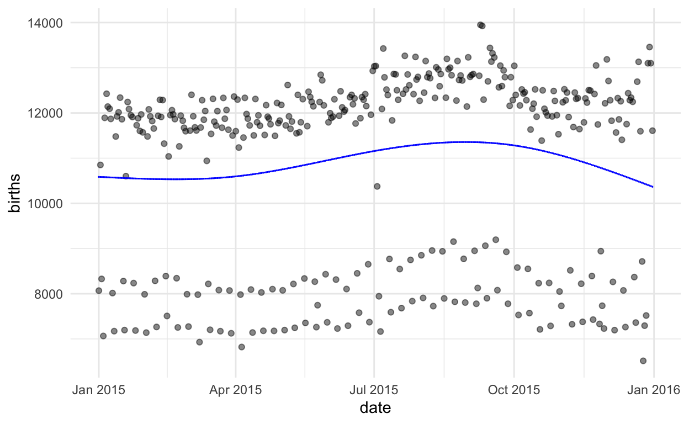

Randall Pruim at Calvin College (Michigan) has a compelling first-day challenge for students: to uncover and understand a surprising pattern in day-by-day births. In this post, we’ll re-use Randy’s challenge to organize a first-day class on the question “What is statistics?”
The main questions in stats are:
Let’s start with some data on the number of births each day in the US.1
Here’s what the data look like, shown in standard format for storing data, much like a spreadsheet.
In statistics you’ll learn about different ways of displaying and summarizing data that makes it easier to see information. Here’s one simple display of just the second column from the data, the number of births each day.

It’s easy to see some interesting things from the graphic than from the table, but hard to see others. For instance, the table makes it clear that our data cover only 100 days. But you would be hard pressed to figure this out from the graph above.
As I said before, in this statistics class you’re going to learn some techniques for making sense of data. Using a graph like the above is one such technique. But we can improve on it by using other techniques.
One is called jittering, which randomly moves the dots a small amount horizontally so that you can more easily see how many there are. Another technique is to make the dots somewhat transparent.

Making sense of data requires that we connect it in some what to what we are interested in finding out.
Perhaps an obvious question raised by these data is: Why are there lots of days with about 12,000 births, and quite a lot with about 8,000 births, but none around 10,000 births?
[I’ll skip the discussion intended to lead students to suspect that there’s another factor involved. Perhaps there is a reduction of births in Fall to prepare for winter.]
It’s often the case that we seek to explain the variation in one variable by using another variable. A first step is to put that other variable, the explanatory variable, on the graph. We’ll put it on the X axis, leaving the Y axis to represent the quantity we’re trying to explain, which we call the response variable.
Time of year is an obvious explanatory variable, so let’s introduce that into our graph.

Making sense of data often involves a cycle:
The description of the cycle uses only everyday words. But there will be a lot to learn. For instance:
You’re going to be working with a tool for displaying data and pattern s that will let you explore data as you think best. The tool is oriented around learning statistics so it includes features to explore some basic questions:
The tool is called a “Little App.” You run it in an ordinary web browser, just by going to this site.
I’m going to show you how it works and then you’ll be all set up to use it.
The Centers for Disease Control publishes data on each of the roughly 4,000,000 births that happen in the US each year. We’ll look at that data later in the course. It’s very detailed, and for privacy reasons they only tell you the month of birth, not the day of the month. But before they implemented that privacy policy, you could find the actual day for each birth. The data we have are from 2015.↩︎